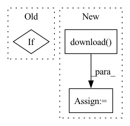

Pattern ID :2369
Before Change
self.scaler = joblib.load("devolearn/scaler/scaler.gz")
if self.mode == "cpu":
self.model.load_state_dict(torch.load("devolearn/models/estimate_lineage_population.pt", map_location= "cpu"))
else:
self.model.load_state_dict(torch.load("devolearn/models/estimate_lineage_population.pt")) After Change
print("model not found, downloading from:", self.model_url)
if os.path.isdir(self.model_dir) == False:
os.mkdir(self.model_dir)
filename = wget.download( self.model_url, out= self.model_dir)
print(filename)
self.model.load_state_dict(torch.load(self.model_dir + "/" + self.model_name, map_location= "cpu"))
In pattern: SUPERPATTERN
Frequency: 5
Non-data size: 3
Instances Fragment ID: 9988585
Project Name: devolearn/devolearn
Commit Name: b5140902f72a37ece1dd38181b67564ed7f2a08a
Time: 2020-08-05
Author: mayukhmainak2000@gmail.com
File Name: devolearn/lineage_population_model/lineage_population_model.py
M Class Name: lineage_population_model
N Class Name: lineage_population_model
M Method Name: __init__(2)
N Method Name: __init__(2)
M Parent Class:
N Parent Class:
M File Name: devolearn/lineage_population_model/lineage_population_model.py
N File Name: devolearn/lineage_population_model/lineage_population_model.py
M Start Line: 28
M End Line: 39
N Start Line: 34
N End Line: 50
Before Change
// path.download()
// print(path)
if self.initialized: // use run directory
wb.restore(self.checkpoint_filename(), run_path=self.cloud_path())
to_path = self.local_path()
else:After Change
print("Requesting checkpoint artifacts {}".format(artifact_path))
artifact = wb.run.use_artifact(artifact_path)
filepath = artifact.download( str(to_path))
// https://discuss.pytorch.org/t/how-to-save-and-load-lr-scheduler-stats-in-pytorch/20208
checkpoint = torch.load(str(Path(filepath) / self.checkpoint_filename()))
return checkpoint Fragment ID: 9988586
Project Name: maria-korosteleva/garment-pattern-estimation
Commit Name: a68af3a4c1cce6488b703255f04cababe20de9ea
Time: 2020-07-08
Author: mariako@kaist.ac.kr
File Name: nn/experiment.py
M Class Name: WandbRunWrappper
N Class Name: WandbRunWrappper
M Method Name: load_checkpoint_file(3)
N Method Name: load_checkpoint_file(3)
M Parent Class: object
N Parent Class: object
M File Name: nn/experiment.py
N File Name: nn/experiment.py
M Start Line: 134
M End Line: 161
N Start Line: 141
N End Line: 157
Before Change
return None
output = "Market-1501-v15.09.15.zip"
if not Path(output).exists():
logger.info("Try to download.")
url = "https://drive.google.com/uc?id=0B8-rUzbwVRk0c054eEozWG9COHM"
gdown.download(url, output, quiet=False)After Change
logger.info("Try to download.")
url = ("http://188.138.127.15:81/Datasets/Market-1501-v15.09.15.zip")
filename = wget.download( url)
logger.info("Market-1501-v15.09.15.zip is downloaded.")
with zipfile.ZipFile(filename, "r") as zip_ref:
zip_ref.extractall(Path.cwd()) Fragment ID: 9988588
Project Name: intel/openfl
Commit Name: a77bde8155a2f9aaee4ae2c025adf373a4688dfb
Time: 2021-10-18
Author: 87072230+katerina-merkulova@users.noreply.github.com
File Name: openfl-tutorials/interactive_api/PyTorch_Market_Re-ID/envoy/market_shard_descriptor.py
M Class Name: MarketShardDescriptor
N Class Name: MarketShardDescriptor
M Method Name: download(0)
N Method Name: download(0)
M Parent Class: ShardDescriptor
N Parent Class: ShardDescriptor
M File Name: openfl-tutorials/interactive_api/PyTorch_Market_Re-ID/envoy/market_shard_descriptor.py
N File Name: openfl-tutorials/interactive_api/PyTorch_Market_Re-ID/envoy/market_shard_descriptor.py
M Start Line: 121
M End Line: 131
N Start Line: 121
N End Line: 129
Before Change
self.mode = mode
if self.mode=="cpu":
self.ngpu = 0
self.generator= Generator(self.ngpu, self.ngf, self.nz, self.nc)
self.generator.load_state_dict(torch.load("devolearn/models/embryo_generator.pt", map_location= "cpu"))After Change
print("model not found, downloading from: ", self.model_url)
if os.path.isdir(self.model_dir) == False:
os.mkdir(self.model_dir)
filename = wget.download( self.model_url, out= self.model_dir)
print(filename)
self.generator.load_state_dict(torch.load(self.model_dir + "/" + self.model_name, map_location= "cpu"))
Fragment ID: 9988593
Project Name: devolearn/devolearn
Commit Name: b5140902f72a37ece1dd38181b67564ed7f2a08a
Time: 2020-08-05
Author: mayukhmainak2000@gmail.com
File Name: devolearn/embryo_generator_model/embryo_generator_model.py
M Class Name: embryo_generator_model
N Class Name: embryo_generator_model
M Method Name: __init__(2)
N Method Name: __init__(2)
M Parent Class:
N Parent Class:
M File Name: devolearn/embryo_generator_model/embryo_generator_model.py
N File Name: devolearn/embryo_generator_model/embryo_generator_model.py
M Start Line: 76
M End Line: 93
N Start Line: 79
N End Line: 101
Before Change
def _split_generators(self, dl_manager):
Returns SplitGenerators.
path_to_manual_file = os.path.abspath(os.path.expanduser(dl_manager.manual_dir))
if not os.path.exists(path_to_manual_file):
raise FileNotFoundError(
"{} does not exist. Make sure you insert a manual dir via `datasets.load_dataset("ttc4900", data_dir=...)` that includes a file name {}. Manual download instructions: {})".format(
path_to_manual_file, _FILENAME, self.manual_download_instructionsAfter Change
urls_to_download = {
"train": _DOWNLOAD_URL + "/" + _FILENAME,
}
downloaded_files = dl_manager.download( urls_to_download)
return [
datasets.SplitGenerator(name=datasets.Split.TRAIN, gen_kwargs={"filepath": downloaded_files["train"]}),
]
Fragment ID: 9988594
Project Name: huggingface/datasets
Commit Name: 440b14d0dd428ae1b25881aa72ba7bbb8ad9ff84
Time: 2021-07-30
Author: komecoglu.yavuz@gmail.com
File Name: datasets/ttc4900/ttc4900.py
M Class Name: TTC4900
N Class Name: TTC4900
M Method Name: _split_generators(2)
N Method Name: _split_generators(2)
M Parent Class: datasets.GeneratorBasedBuilder
N Parent Class: datasets.GeneratorBasedBuilder
M File Name: datasets/ttc4900/ttc4900.py
N File Name: datasets/ttc4900/ttc4900.py
M Start Line: 97
M End Line: 104
N Start Line: 110
N End Line: 113